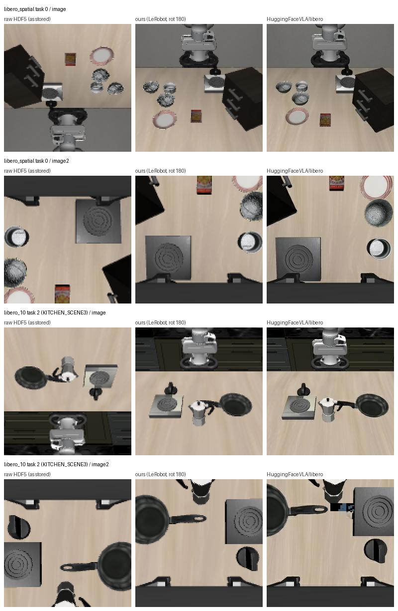

All 1000 human demonstrations of libero_spatial and libero_10 now sit in one LeRobot v3 dataset (200,340 frames), stored losslessly. Every stored frame equals the raw frame rotated 180°.
The first milestone asks for LIBERO in a form SmolVLA can train on, and the episode catalog builds on LeRobot's format. The owner asked for "a dataset … that will enable all downstream tasks inside the poc" (brief.md).
Foundation: "Lineage tracking; episode catalog; LIBERO (one or two suites) + SmolVLA" — §10, p. 20
"LeRobot's dataset format plus a Parquet metadata table works well." — §2.2, p. 4
| File / function | What it does |
|---|---|
vlapoc/libero_convert.py::load_raw_episode | The one raw → canonical mapping: frames flipped in height and width (180°), state = ee_pos ‖ ee_ori ‖ gripper_states as float32 (8 values), actions as float32 (7). |
vlapoc/libero_convert.py::convert | LeRobot's own writer loop: LeRobotDataset.create(fps=20, use_videos=False, robot_type="panda") → add_frame → save_episode → finalize. |
vlapoc/libero_convert.py::FEATURES, LIBERO_TASK_ORDER | The LeRobot LIBERO schema (keys copied from the pinned hub info.json files), and LIBERO's benchmark task order, which is not alphabetical. |
vlapoc/libero_convert.py::iter_raw_episodes | Walks the raw files in suite → task → demo_k order. That order becomes LeRobot's episode_index. |
scripts/verify_libero_convert.py | Evidence for AC1.1–1.6: info.json, schema diffs against both hub datasets, frame-by-frame checks, counts, rewards, size. |
scripts/orientation_figure.py | The raw / ours / hub comparison image and the pixel-difference numbers. |
artifacts/reference/ | Pinned copies of both hub info.json files, LIBERO's task map, and the hub reference frames with their row provenance. |
| AC | Source | Result | Evidence (real output) |
|---|---|---|---|
AC1.1 info.json: v3.0, fps 20, 1000 episodes, 200,340 frames, 20 tasks; the dataset loads | §10 p.20 | met | AC1.1 info.json: {'codebase_version': 'v3.0', 'fps': 20, 'total_episodes': 1000, 'total_frames': 200340, 'total_tasks': 20, 'robot_type': 'panda'}LeRobotDataset loads: num_episodes=1000 num_frames=200340 |
AC1.2 (reworded r2) Schema equals HuggingFaceVLA/libero@86958911 except image shape and fps; the dtype difference against lerobot/libero is recorded | LeRobot LIBERO docs; AC1.6 | met | vs HuggingFaceVLA/libero: image.shape ours=[128,128,3] ref=[256,256,3]; image2.shape likewise (fps 20 vs 10)vs lerobot/libero: also image.dtype ours=image ref=video |
| AC1.3 State and action equal the raw HDF5 values, every frame of 3 episodes per suite | LeRobot docs | met | episode_index 0, 250, 499, 500, 750, 999: 'state_equal': True, 'action_equal': True. Analyzer: 10 more random episodes with its own pyarrow/h5py reader. |
| AC1.4 Frames are the raw frames rotated 180°; orientation figure | env_processor.py | met | 'image_eq_raw_rot180': True, 'image_eq_raw_unrotated': False, 'image2_eq_raw_rot180': True (all 6 episodes, every frame) |
| AC1.5 No filtering: 20 tasks × 50; every length equals raw; every demo's only reward is at its last step | CLAUDE.md rule | met | 20 tasks, counts=[50] · length == raw num_samples: 1000/1000 · exactly one reward==1, at the last step: 1000/1000; dones likewise: 1000/1000 |
| AC1.6 (reworded r2) Lossless storage; size as file bytes; wall time | analysis-r1 | met | sum(file sizes)=7.356 GB (36719 B/frame), data parquet files=73, videos dir exists=False · "wall_time_s": 468.5 |
| AC1.7 Grounding docstring cites §2.2, §10 and the schema sources, and states the divergences | vla-build | met | Module docstring of vlapoc/libero_convert.py, read by the analyzer. |
Episode 999 is the last demo of the last libero_10 task. Reading it back through LeRobot and comparing it with the raw HDF5, read independently, matches state, action and both cameras on all 295 frames:
$ .venv/bin/python scripts/verify_libero_convert.py
AC1.3/1.4 episode_index 999: {'episode': 'libero_10/KITCHEN_SCENE6_put_the_yellow_and_white_mug_in_the_microwave_and_close_it/demo_49',
'frames': 295, 'state_equal': True, 'action_equal': True, 'image_eq_raw_rot180': True,
'image_eq_raw_unrotated': False, 'image2_eq_raw_rot180': True}
AC1.5 raw rewards: exactly one reward==1, at the last step: 1000/1000; dones likewise: 1000/1000
AC1.6 on-disk: du=7.44 GiB, sum(file sizes)=7.356 GB (36719 B/frame), data parquet files=73, videos dir exists=False| Ours (v0) | lerobot/libero @ a1aaacb7, same two suites | |
|---|---|---|
| Episodes | 1000 (500 + 500) | 811 (432 + 379) |
| Frames | 200,340 | 154,439 |
| Episodes shortened against raw | 0 | 68 of 811 have a length no raw demo of that task has |
| Declared fps | 20 (the control rate) | 10 |
| Image size and storage | 128² native, lossless PNG in parquet | 256² re-render, AV1 video |
Map back to raw demo_k | yes (S2: source_file, source_demo) | no column for it in meta/episodes |
Ours: measured in S1 (artifacts/s1_summary.json). Hub column: measured by the planner from the
hub's pinned metadata (plan.md, prior-art table). I did not re-run it for this page.
The hub set is OpenVLA's "no-noops" corpus. Its premise (that some demos failed) is false here: every raw
demo ends with its only reward == 1 (AC1.5).

artifacts/s1_orientation_stats.json). The hub frame comes from a different demo, re-rendered at
256², so it is not expected to match exactly. The exact check is AC1.4 (bit-equal to raw rotated 180°).LiberoEnv config defaults to 360 (quoted in plan.md). Published
SmolVLA/π0 LIBERO numbers used the 256² hub data, so absolute success rates may differ (inferred).lerobot/libero the image dtype is necessarily
image rather than video, because the dataset is lossless. The analyzer accepted
the rewording as matching what was built.images/ staging tree behind. convert() now removes
it after finalize(), so the committed converter differs from the code that ran by those 4 lines
(execution log).libavdevice clashes with Homebrew ffmpeg and prints an objc warning on import
(measured). No crash was observed.